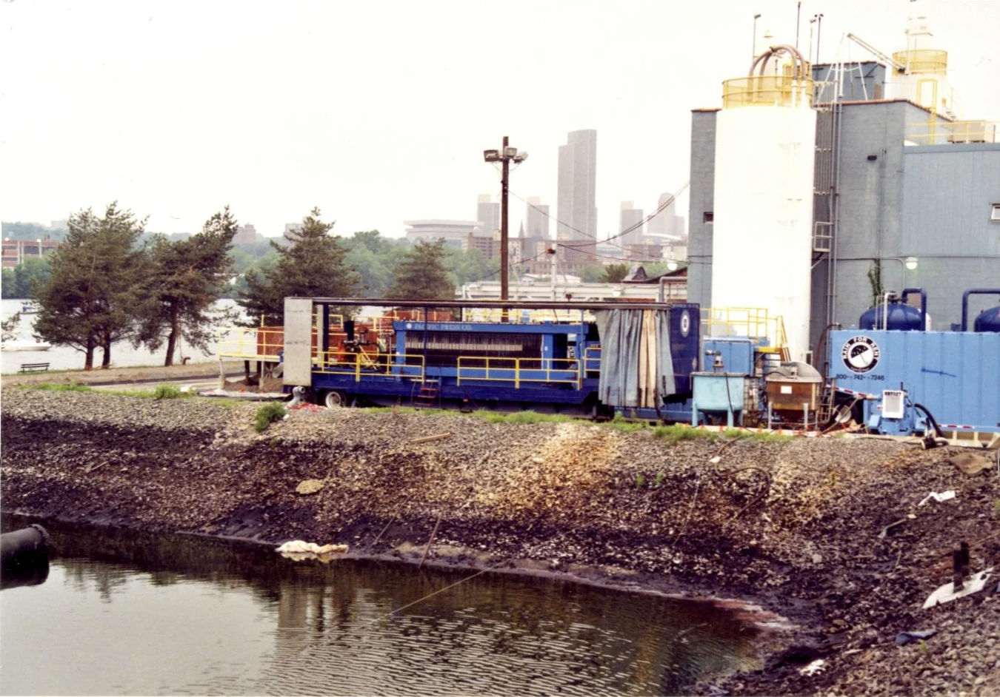

Industrial Lagoon Remediation at a Decommissioned Chemical Site
Two 100 cu.ft. trailer presses supplied continuous temporary dewatering while several million gallons of contaminated lagoon water and accumulated solids were treated for disposal.

The Remediation Challenge
A decommissioned chemical manufacturing site in upstate New York had years of industrial contamination in lagoons adjacent to the Hudson River. Several million gallons of water and a substantial accumulation of solids needed to be removed, treated, dewatered, and prepared for proper disposal.
Temporary Treatment at Full Project Scale
For the first phase, Pacific Press Company supplied two 100 cu.ft. trailer-mounted filter presses. The rental systems operated around the clock for almost one year, giving the remediation team immediate large-scale dewatering capacity without waiting for a permanent installation.
How the Treatment Train Worked
Clarifiers and sand filters precipitated and separated contaminants from the waste streams before the concentrated solids reached the filter presses. Air-operated diaphragm pump skids fed each press. Portable air compressors supplied by the customer powered the pumps and the presses' air-blowdown step.
Cake Handling and Disposal
After dewatering, each press discharged solids onto a drag-chain conveyor. The conveyor moved the cake out the back of the trailer and into a refuse bin for consolidation and final disposal. The trailer configuration combined high-capacity filtration with a practical solids-handling path for continuous field operation.
Planning a large remediation project?
PacPress can help configure temporary filtration, feed pumping, air requirements, and cake discharge around the treatment train already on site.